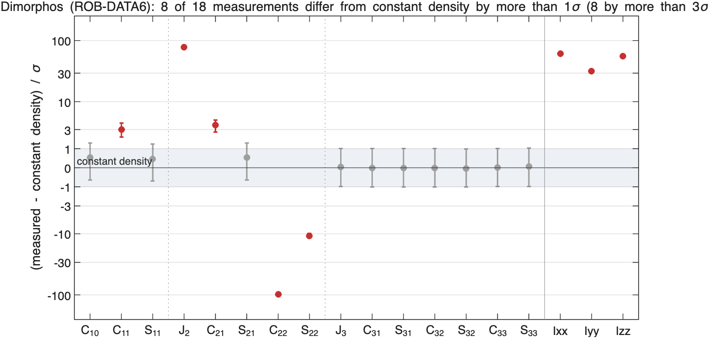
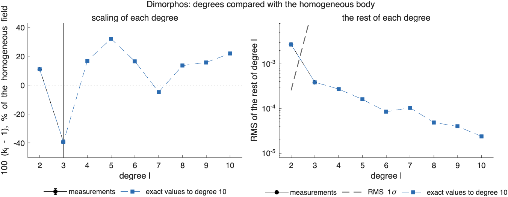
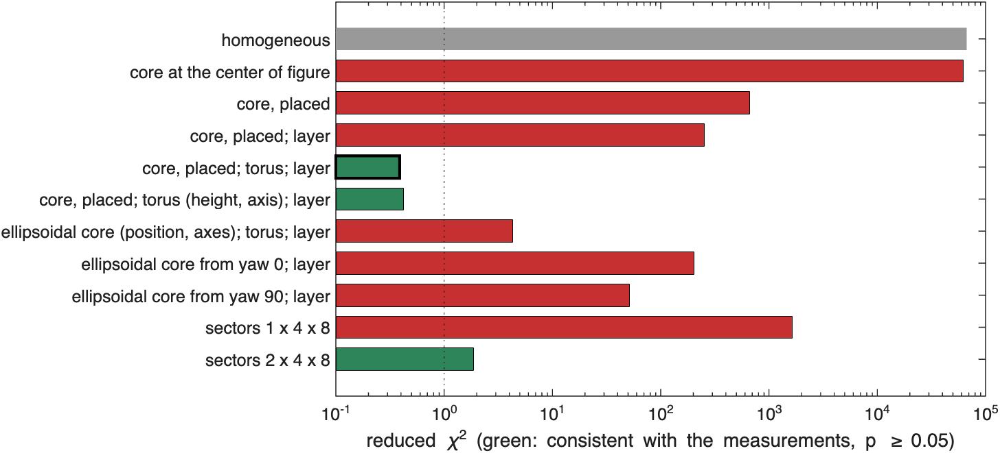
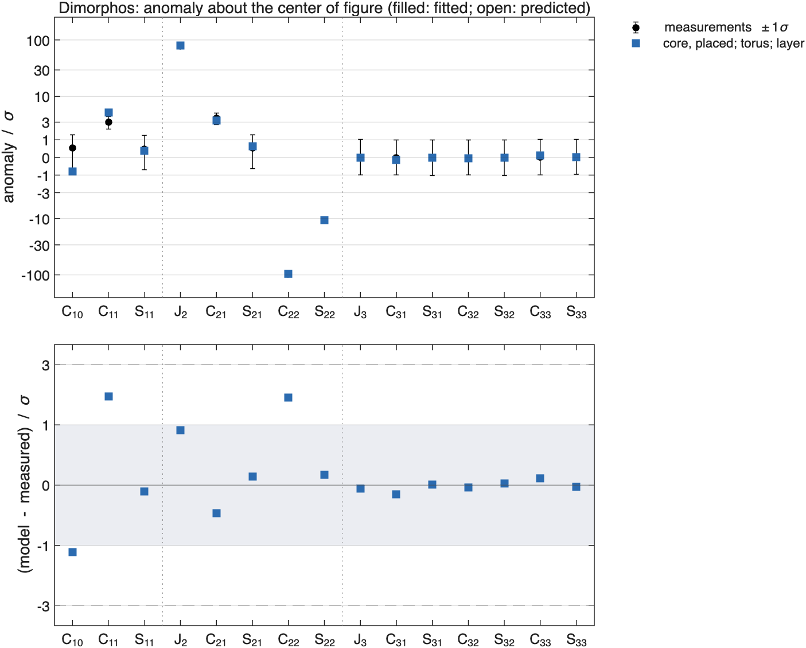
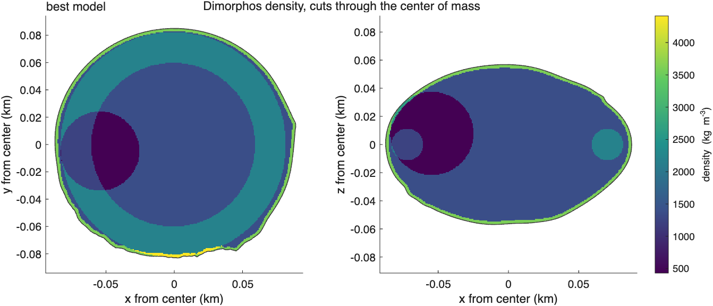
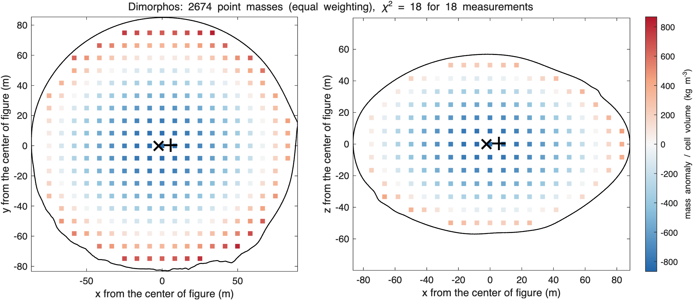

ROB-DATA6: Dimorphos#
Last edited October 27, 2026
Result. Mass is pushed outward: degree 2 is 11% larger than the homogeneous body's and all three moments of inertia are 30 to 60σ larger. A light core 54 m from the center of figure toward −x, a dense equatorial torus and a dense surface layer explain the coefficients and the inertia (reduced 0.39). Without a ring the dense outside cannot be fitted, and a model of sectors needs two shells. At the surface point near the +x end every consistent model predicts the acceleration's magnitude to within a few percent but its direction 2.6–3° off, as does the homogeneous body: the material near the lander is not resolved. The package's mass corresponds to 1594 kg/m³, the highest of the three Dimorphos packages.
Reading#

Dimorphos (ROB-DATA6): anomaly about the center of figure, degrees 1 to 3
center of mass - center of figure: [1.29 0.22 0.19] m +- [0.43 0.59 0.42] m, |offset| 1.32 m
chi-square of the offset: 9.517 for 3 degrees of freedom
degree RMS anomaly RMS 1-sigma ratio k_l +- 1-sigma residual chi2 / dof
1 4.902e-03 3.097e-03
2 3.541e-03 2.556e-04 1.10901 +- 0.00154 1.462e+04 / 4
3 5.192e-04 2.677e-02 0.60566 +- 10.02662 0.001667 / 6
one compact mass with the same degrees 1 and 2: -12.798% +- 1.152% of the mass (-3.59e+08 kg) at [-10.1 -1.7 -1.4] m +- [2.5 4.6 3.3] m from the center of figure- Degree 2 is scaled up by 11%, and its rest has 14,600 for 4 degrees of freedom, mostly (−97σ: the anomaly changes its sign) and (+79σ): mass moved outward and toward the equator.
- The moments of inertia are 62σ (), 32σ () and 56σ () above the homogeneous body's: the mass is farther from the center. Only the inertia measures that directly.
- The center of mass is 1.3 m toward +x, 3σ at this precision.
- One compact mass with degrees 1 and 2: −12.8 ± 1.2% of the mass (a deficit) 10 m toward −x. A light center, on the side opposite the center-of-mass offset.

Models#

model chi2/nu p params components (relative density +- 1 sigma, kg/m^3; centers from the center of figure, m)
homogeneous 6.7e+04 0 0.0 background 1594
core at the center of figure 6.2e+04 0 1.0 background 1396 | core +3104 +- 18 at [0 0 0]
core, placed 660 0 4.0 background 1703 | core -1703 +- 26 at [-41 -2 -21]
core, placed; layer 254 0 5.0 background 1534 | core -1534 +- 244 at [-43 -2 -19] | regolith +1836 +- 296
core, placed; torus; layer 0.388 0.97 6.0 background 1383 | core -953 +- 371 at [-54 -5 8] | torus +816 +- 66 at [0 0 0] | regolith +2214 +- 345
core, placed; torus (height, axis); layer 0.419 0.93 9.0 background 1392 | core -1002 +- 527 at [-53 -4 10] | torus +864 +- 821 at [0 0 10] | regolith +2093 +- 690
ellipsoidal core (position, axes); torus; layer 4.31 1.3e-05 9.0 background 1212 | core +1320 +- 740 at [6 -45 -2] | torus +330 +- 123 at [0 0 0] | regolith +3114 +- 746
ellipsoidal core from yaw 0; layer 205 0 8.0 background 1410 | core -1410 +- 431 at [-51 -3 -24] | regolith +3045 +- 519
ellipsoidal core from yaw 90; layer 51.7 1e-104 8.0 background 1249 | core +1190 +- 253 at [7 -55 -1] | regolith +3251 +- 276
sectors 1 x 4 x 8 1.65e+03 0 15.5 background 1594 | s111 +2906 +- 42843 | s112 -1594 +- 44580 | s113 +2458 +- 44299 | s114 -1594 +- 42906 | s115 -1594 +- 44446 | s116 -1594 +- 45116 | s117 -1594 +- 44646 | s118 -1594 +- 43638 | s121 +2906 +- 23349 | s122 -1594 +- 26549 | s123 -1329 +- 23255 | s124 +2906 +- 16732 | s125 -1594 +- 15946 | s126 +870 +- 21778 | s127 +799 +- 25831 | s128 -1258 +- 23841 | s131 -320 +- 22817 | s132 -1594 +- 26047 | s133 +2906 +- 23920 | s134 -1594 +- 20510 | s135 -1594 +- 17877 | s136 +2906 +- 23617 | s137 -1594 +- 25945 | s138 +96 +- 23121 | s141 +2906 +- 43594 | s142 +1089 +- 44526 | s143 -1594 +- 44318 | s144 -1594 +- 43820 | s145 -1594 +- 44243 | s146 +1141 +- 43958 | s147 -1594 +- 44390 | s148 -1594 +- 43802
sectors 2 x 4 x 8 1.86 0.05 8.5 background 1594 | s111 -295 +- 344 | s112 -285 +- 344 | s113 -283 +- 344 | s114 -284 +- 344 | s115 -268 +- 344 | s116 -265 +- 344 | s117 -275 +- 344 | s118 -284 +- 344 | s121 -1490 +- 333 | s122 -1372 +- 335 | s123 -1378 +- 335 | s124 -1443 +- 334 | s125 -1320 +- 336 | s126 -1363 +- 335 | s127 -1390 +- 335 | s128 -1475 +- 334 | s131 -1469 +- 334 | s132 -1384 +- 335 | s133 -1388 +- 335 | s134 -1385 +- 335 | s135 -1403 +- 334 | s136 -1378 +- 335 | s137 -1394 +- 335 | s138 -1475 +- 334 | s141 -287 +- 344 | s142 -281 +- 344 | s143 -276 +- 344 | s144 -256 +- 344 | s145 -269 +- 344 | s146 -280 +- 344 | s147 -282 +- 344 | s148 -287 +- 344 | s211 +98 +- 328 | s212 +54 +- 330 | s213 +61 +- 330 | s214 +48 +- 330 | s215 -40 +- 333 | s216 -45 +- 333 | s217 -10 +- 332 | s218 +23 +- 331 | s221 +201 +- 245 | s222 +50 +- 258 | s223 +289 +- 256 | s224 +392 +- 244 | s225 -300 +- 265 | s226 +448 +- 252 | s227 +297 +- 256 | s228 +67 +- 247 | s231 +24 +- 247 | s232 +225 +- 257 | s233 +496 +- 251 | s234 +91 +- 256 | s235 +330 +- 251 | s236 +505 +- 254 | s237 +208 +- 255 | s238 -50 +- 248 | s241 +40 +- 330 | s242 +35 +- 331 | s243 +34 +- 331 | s244 -107 +- 334 | s245 -35 +- 333 | s246 +57 +- 331 | s247 +36 +- 331 | s248 +16 +- 330
best: core, placed; torus; layer- A light core alone goes 46 m toward −x and −z (−1700 kg/m³, almost empty): reduced 660. A dense layer brings it to 254.
- A light core, a dense torus about the -axis and a dense layer: 0.39. The torus (+816 ± 66 kg/m³) carries the equatorial excess; the layer (+2214 ± 345 kg/m³: a crust about 2.3 m thick at about 3600 kg/m³) and the light core (−950 ± 370 kg/m³) the outward shift. With the torus height and axis free, the same within 1σ.
- Ellipsoidal cores without a torus: 52 to 205. Sectors of one shell cannot fit (1650); of two shells they reach 1.86 with the largest consistent regularization, a lighter inner shell and a denser outer one.


How far the model reaches#
fitted to chi2/nu chi2/n fitted chi2/n others
degrees 1-2 0.928 0.422 0.00302
degrees 1-3 0.388 0.259 -
Fraction of each degree's anomaly (exact values) reproduced, 1 - |model - given|^2/|given|^2:
fitted to 1 2 3 4 5 6 7 8 9 10
degrees 1-2 0.54 1.00 -4.12 -0.23 -1.63 -3.79 -0.64 -5.58 -0.14 -5.13
degrees 1-3 0.54 1.00 -4.12 -0.23 -1.63 -3.79 -0.64 -5.58 -0.14 -5.13
The model reproduces all of degree 2 and half of degree 1 (the center of mass, measured only to 0.5 m), and none of degrees 3–10 of the exact values: the anomaly at those scales has another shape than a torus and a crust. At the radio-science precision this cannot be seen, since only degree 2 is resolved; with better data the model would have to be truncated at degree 2.
Point masses#


equal weighting: 2674 points every 8.3 m, lambda 8.45e-10, chi2 18 for 18 measurements; positive 2.46e+08 kg at [6 0 0] m, negative -2.46e+08 kg at [-2 -0 -0] m
sensitivity weighting: 2674 points every 8.3 m, lambda 1.5, chi2 18 for 18 measurements; positive 3.18e+08 kg at [2 -0 0] m, negative -3.18e+08 kg at [-1 0 0] mWith sensitivity weighting the point masses give a strongly light center (−3100 kg/m³ per cell in the inner fifth of the radius) and a denser outer half (+180 to +220 kg/m³), the same picture as the model: a light interior inside a denser shell.
Surface point#
surface point [85.4 7.5 12.0] m; models consistent with the coefficients and inertia
U (m^2/s^2) |a| (m/s^2) |a| vs % angle deg
given 2.329658e-03 3.176463e-05 0.000 0.000
homogeneous 2.303306e-03 3.119500e-05 -1.793 2.638
4 core, placed; torus; layer 2.369193e-03 3.306649e-05 4.098 3.002
5 core, placed; torus (height, axis); layer 2.380386e-03 3.390141e-05 6.727 2.665
10 sectors 2 x 4 x 8 2.326433e-03 3.205818e-05 0.924 2.644The homogeneous body predicts 1.8% too little acceleration at the surface point, 2.6° off in direction. The consistent models predict +0.9% (two-shell sectors) to +6.7% (torus with a free axis) and keep the direction 2.6–3.0° off: the dense crust of the best model is too dense near this point, and none of the models changes the direction. The coefficients and the inertia do not constrain the material near the lander.
Surface point scan#
ROB-DATA6: surface point [85.4 7.5 12.0] m, given |a| 3.176463e-05 m/s^2
depth m drho chi2/nu p |a| vs % angle deg core, torus, layer (relative densities, kg/m^3)
12 -1500 4.78 7e-08 -3.82 3.27 -1500 at [-40 -3 4] m, +754, +1373
12 -1000 0.268 0.99 -1.78 3.26 -904 at [-53 -5 9] m, +811, +2234
12 -500 0.321 0.99 +1.16 3.12 -928 at [-53 -5 8] m, +814, +2223
12 +0 0.388 0.97 +4.10 3.00 -953 at [-54 -5 8] m, +816, +2214
12 +500 0.473 0.93 +7.05 2.91 -982 at [-54 -5 7] m, +817, +2200
12 +1000 0.567 0.87 +9.99 2.83 -1006 at [-54 -5 7] m, +819, +2192
12 +1500 0.678 0.77 +12.94 2.77 -1034 at [-54 -5 7] m, +820, +2181
12 +2000 0.803 0.65 +15.89 2.73 -1063 at [-54 -5 6] m, +821, +2169
12 +2500 0.943 0.5 +18.84 2.70 -1091 at [-54 -5 6] m, +821, +2158
12 +3000 1.1 0.36 +21.80 2.69 -1121 at [-54 -5 5] m, +822, +2145
25 -1500 4.76 7.5e-08 +2.91 2.96 -1500 at [-41 -3 4] m, +755, +1371
25 -1000 0.293 0.99 +2.72 3.05 -920 at [-53 -5 9] m, +811, +2213
25 -500 0.339 0.98 +3.41 3.02 -939 at [-53 -5 8] m, +813, +2211
25 +0 0.388 0.97 +4.10 3.00 -953 at [-54 -5 8] m, +816, +2214
25 +500 0.449 0.94 +4.79 2.98 -971 at [-54 -5 8] m, +818, +2212
25 +1000 0.52 0.9 +5.49 2.96 -993 at [-54 -5 7] m, +819, +2208
25 +1500 0.591 0.85 +6.17 2.94 -1007 at [-54 -5 7] m, +821, +2212
25 +2000 0.675 0.78 +6.87 2.92 -1025 at [-54 -5 7] m, +823, +2211
25 +2500 0.767 0.69 +7.56 2.90 -1045 at [-54 -5 6] m, +825, +2210
25 +3000 0.866 0.58 +8.26 2.88 -1064 at [-54 -5 6] m, +826, +2209